Projets & Expériences
🌐 Projet PFE – Déploiement d’un Cloud Privé OpenStack & Migration ERP Odoo
Entreprise : KADRANS (Paris, France) Période : Mars – Août 2025 🎯 Objectif : Déployer une infrastructure cloud privée via OpenStack (Kolla-Ansible) pour héberger Odoo, avec supervision et automatisation CI/CD. 🛠️ Tâches réalisées : Étude des besoins de l’entreprise et choix de l’architecture cloud. Déploiement multi-nœud OpenStack avec Kolla-Ansible (1 contrôleur, 2 compute). Installation d’un cluster Ceph pour le stockage distribué. Migration complète de l’ERP Odoo depuis OVH (base de données + services). Conteneurisation d’Odoo avec Docker. Automatisation des déploiements via Jenkins + Git + Ansible. Mise en place de la supervision avec Prometheus et Grafana. Sécurisation de l’environnement cloud et documentation technique. ✅ Résultats : Infrastructure cloud stable et scalable. ERP Odoo migré avec succès, CI/CD fonctionnelle. Supervision complète et monitoring en temps réel. 💻 Technologies : OpenStack, Kolla-Ansible, Ceph, Docker, Jenkins, Git, Ansible, Prometheus, Grafana, Odoo, OVH.
🧠 Stage – Développement IA & Extraction de Données
Entreprise : VAERDIA (Tunisie) Période : Juillet – Septembre 2024 🎯 Objectif : Automatiser l’extraction et la classification sémantique de données PDF à l’aide de l’IA. 🛠️ Tâches réalisées : Analyse des formats PDF à traiter. Extraction de texte avec pdfplumber et PyMuPDF. Classification automatique via l’API OpenAI. Développement backend (Flask, Laravel) + frontend (React.js). Mise en place d’un pipeline CI/CD avec Jenkins. Tests unitaires et qualité du code (JUnit, JaCoCo, SonarQube). Conteneurisation avec Docker, gestion des artefacts avec Nexus. ✅ Résultats : Pipeline automatisé de traitement intelligent de documents. Plateforme web déployée avec interface claire. 💻 Technologies : React.js, Flask, Laravel, Python, pdfplumber, PyMuPDF, API OpenAI, Jenkins, Maven, Docker, Nexus, SonarQube.
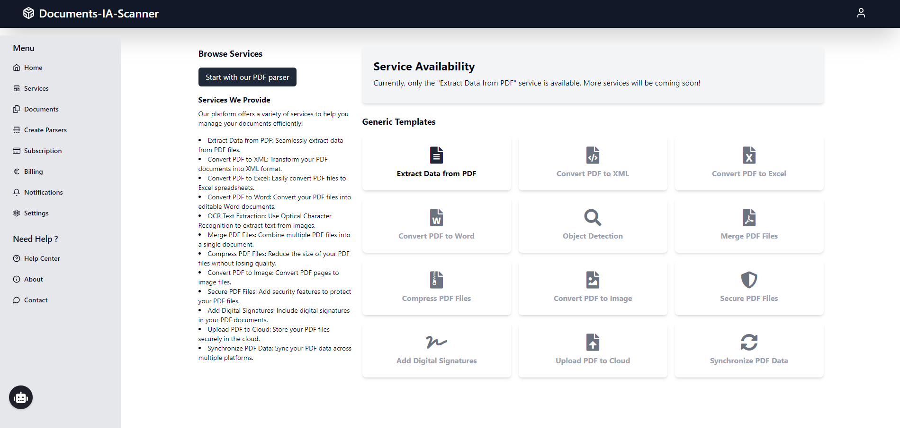
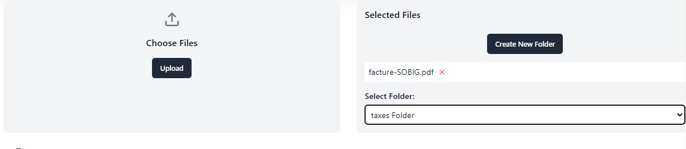
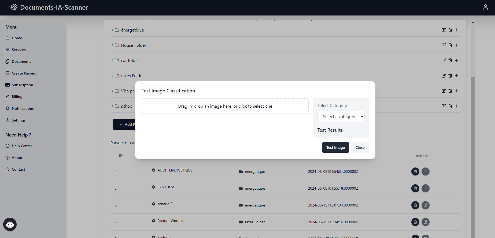
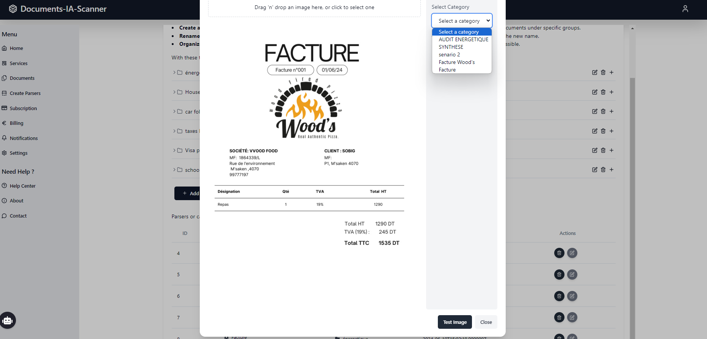
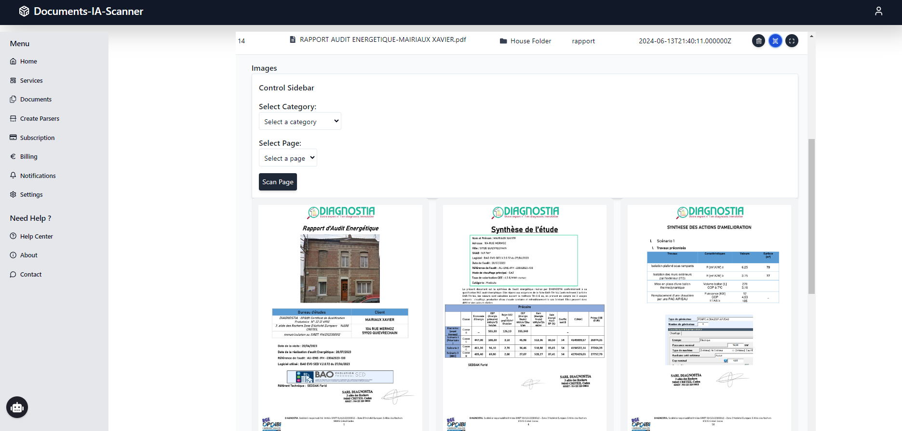
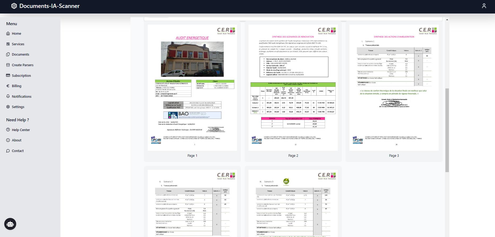

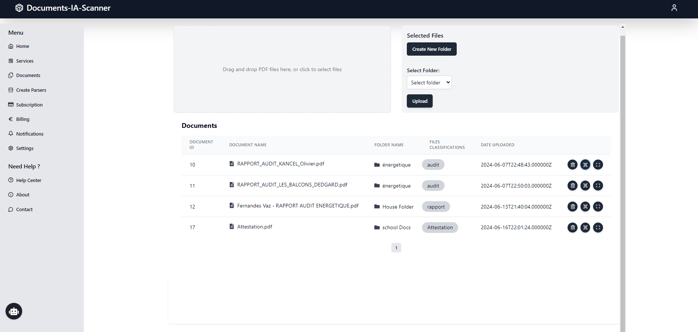
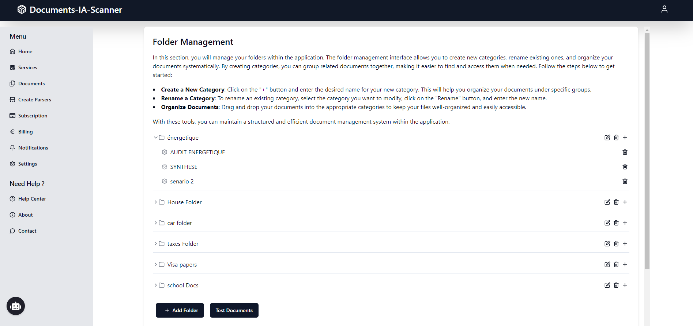
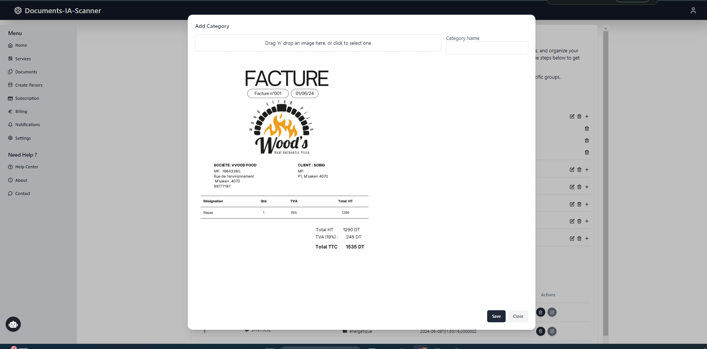
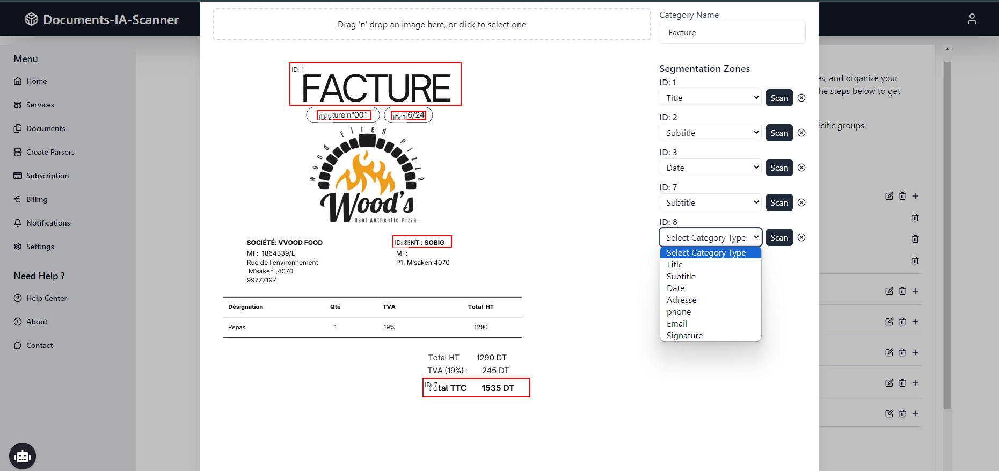
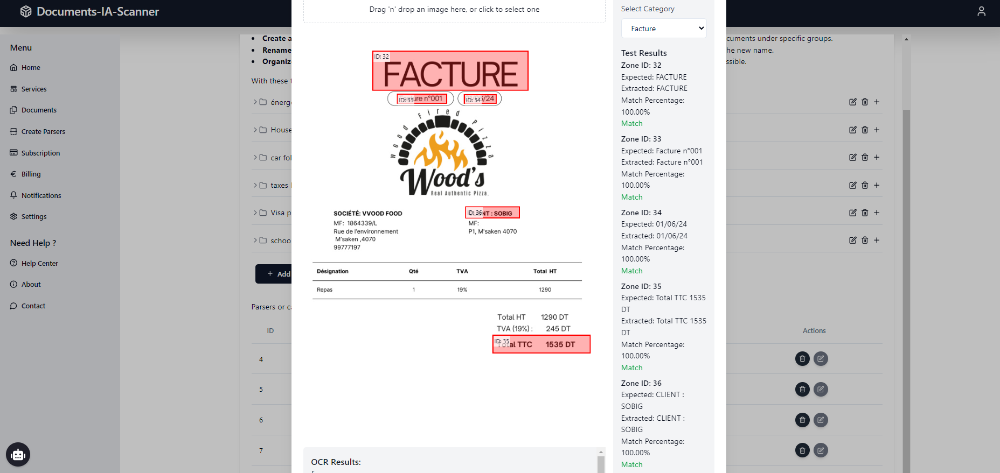

🧾 Stage – Développement d’une Application ShortURL
Entreprise : CONSULTIM-IT (Sousse) Période : Juillet – Septembre 2023 🎯 Objectif : Développer une application de raccourcissement d’URL sécurisée avec statistiques et extension Chrome. 🛠️ Tâches réalisées : Conception backend avec .NET Core (Minimal APIs). Base SQLite sécurisée par JWT. Développement frontend avec Angular. Intégration de statistiques (clics, géolocalisation). Création d’une extension Chrome connectée à l’API. Développement du tableau de bord interactif. Tests fonctionnels et déploiement. ✅ Résultats : Application opérationnelle, sécurisée et ergonomique. Extension Chrome fonctionnelle. 💻 Technologies : .NET Core, Angular, SQLite, JWT, Chrome Extension, REST API.
👩💼 Stage PFE – Développement d’un Système RH
Entreprise : AXIA Solutions (Sousse) Période : Janvier – Juin 2022 🎯 Objectif : Créer un système de gestion RH complet (employés, congés, notes de frais, recrutement). 🛠️ Tâches réalisées : Analyse des besoins RH. Conception du schéma SQL Server. Développement backend ASP.NET Core. Frontend React.js avec formulaires dynamiques. Authentification et gestion des rôles utilisateurs. Intégration d’un module de gestion des justificatifs. Déploiement et documentation. ✅ Résultats : Plateforme RH complète livrée et testée. Interface sécurisée et fluide. 💻 Technologies : ASP.NET Core, React.js, SQL Server, JWT, API REST.
☁️ Projet académique – Infrastructure Cloud IaaS
Établissement : ESPRIT 🎯 Objectif : Mettre en œuvre une infrastructure cloud IaaS complète et automatisée. 🛠️ Tâches réalisées : Déploiement OpenStack avec 1 contrôleur, 4 compute, 1 stockage. Orchestration via Heat, conteneurs avec Docker. Intégration de Kubernetes avec Magnum. Supervision avec Prometheus & Grafana. Automatisation des tâches via Ansible. Documentation et test de charge. ✅ Résultats : Infrastructure IaaS fonctionnelle avec orchestration. Déploiement automatisé des services cloud. 💻 Technologies : OpenStack, Heat, Magnum, Docker, Kubernetes, Ansible, Prometheus, Grafana.
📚 Projet académique – Application SaaS Étudiante
Établissement : ESPRIT 🎯 Objectif : Développer une application SaaS pour étudiants (documents, planning, notifications…). 🛠️ Tâches réalisées : Analyse des besoins des étudiants. Backend Spring Boot + base de données MySQL. Frontend Angular responsive. Authentification, espace personnel, gestion de documents. Hébergement sur Azure. Tests et présentation. ✅ Résultats : Application web SaaS déployée et fonctionnelle. Interface moderne et sécurisée. 💻 Technologies : Spring Boot, Angular, MySQL, Azure, API REST.
🔐 Projet académique – Architecture Réseau Sécurisée
Établissement : ESPRIT 🎯 Objectif : Concevoir une architecture réseau sécurisée avec segmentation et détection d'intrusions. 🛠️ Tâches réalisées : Création d’une topologie LAN/DMZ/WAN virtualisée. Configuration de pfSense (NAT, firewall, VPN, DHCP). Mise en place d’un VPN IPSec. Intégration d’un IDS Snort. Simulations d’attaques via Kali Linux. Analyse réseau avec Wireshark. Rédaction d’un rapport de sécurité. ✅ Résultats : Réseau sécurisé et testé face à plusieurs scénarios d’attaque. Rapport d’audit et recommandations validées. 💻 Technologies : pfSense, OpenVPN, Snort, Wireshark, Kali Linux, Linux, SSH.
🏥 Projet académique – Application de Gestion d’Hôpital Multiplateforme
Établissement : ESPRIT
🎯 Objectif :
Développer une solution complète de gestion hospitalière accessible depuis le web, le bureau et le mobile, centralisée sur une base de données unique.
🛠️ Tâches réalisées :
Conception de l’architecture client-serveur multi-plateforme.
Développement du backend Web avec Symfony 5 (PHP) pour l’administration.
Création de l’application desktop avec Java Swing pour les médecins.
Réalisation de l’application mobile en CodeName One pour les patients.
Connexion des trois clients à une base de données MySQL centralisée.
Implémentation des fonctionnalités : gestion des patients, rendez-vous, dossiers médicaux, planning.
Mise en place de l’authentification et gestion des rôles utilisateurs.
✅ Résultats :
Application opérationnelle et synchronisée sur 3 plateformes.
Base de données partagée avec cohérence des informations en temps réel.
Interfaces adaptées à chaque profil utilisateur (médecin, patient, admin).
💻 Technologies :
Symfony 5, PHP, Java, CodeName One, MySQL, MVC, REST, Swing.
🔗 Liens GitHub :
Repo Backend / Web (Symfony)
Repo Desktop (JavaFX)
🔄 Projet académique – DevOps : Pipeline CI/CD
Établissement : ESPRIT 🎯 Objectif : Mettre en place une chaîne DevOps complète pour automatiser le cycle de vie d’une application : build, test, analyse, déploiement et supervision. 🛠️ Tâches réalisées : Développement d’un projet Java avec Maven. Mise en place de l’intégration continue avec Jenkins. Gestion des artefacts via Nexus. Analyse de la qualité de code avec SonarQube. Versionnement du projet avec GitHub. Conteneurisation du build avec Docker. Déploiement automatique sur un environnement de test. Supervision en temps réel avec Prometheus et Grafana. Rédaction de documentation DevOps (CI/CD pipeline, monitoring, logs). ✅ Résultats : Chaîne CI/CD fonctionnelle et 100% automatisée. Amélioration de la qualité et rapidité de déploiement. Supervision efficace des métriques système et applicatives. 💻 Technologies : Jenkins, Maven, Nexus, SonarQube, GitHub, Docker, Prometheus, Grafana, Java.
Contact
📧 kaibii.rihab@gmail.com | 📍 Paris, France